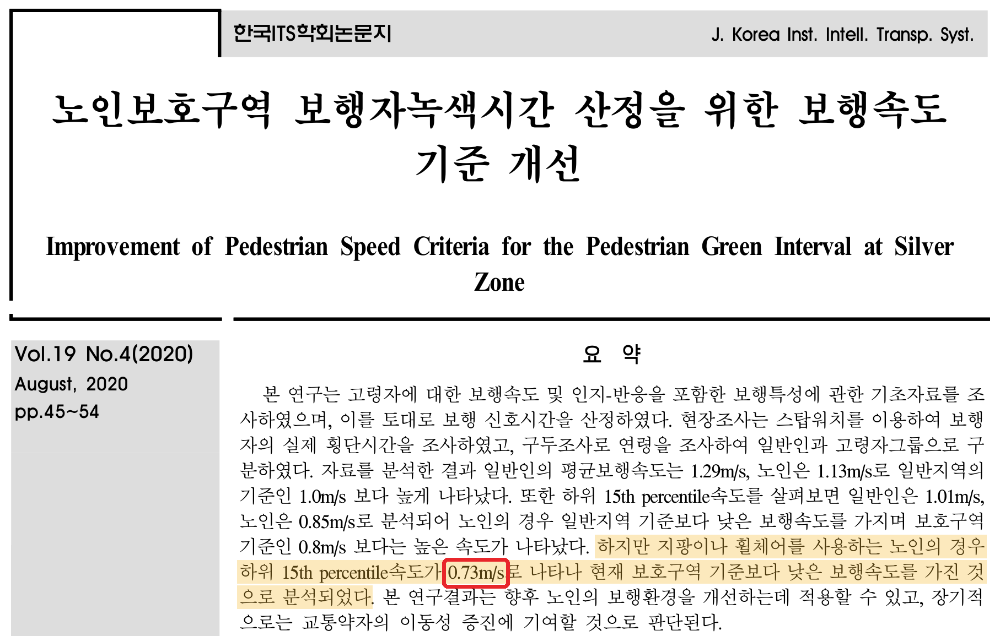

3-2. 기준 시간 및 기준 거리
기준 시간
60대 이상 고령층 유동인구는 하루 중 09시부터 19시까지 가장 높게 기록된다.
후보지의 경우 대부분 09시부터 18시까지 운영을 하는 곳이 대다수이다.
위의 경우를 고려하여 분석 시간대는 09시부터 18시까지로 결정한다.

시간대별 유동 인구 및 무더위쉼터 운영시간
기준 거리
횡단보도 보행자 4,857명(65세 이상 3,188명)을 조사한 연구에서 지팡이나 휠체어를 쓰는 노인의 하위 15% 보행속도는 0.73m/s로 나타났다.
보행이 가장 느린 고령층을 기준으로 도보 5분 안에 쉼터에 도착할 수 있는 거리를 산정한다.
0.73m/s × 300초를 적용하여 기준 거리는 보행거리 219m로 결정한다.
출처: 한음 외(2020), 노인보호구역 보행자녹색시간 산정을 위한 보행속도 기준 개선, 한국ITS학회논문지 19(4), 45-54.

노인 보행속도 연구 (한국ITS학회논문지, 2020)